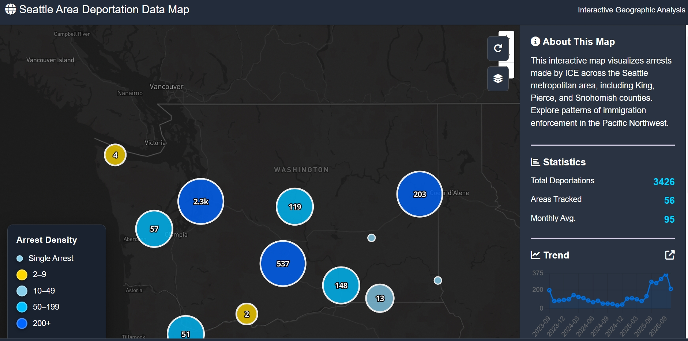
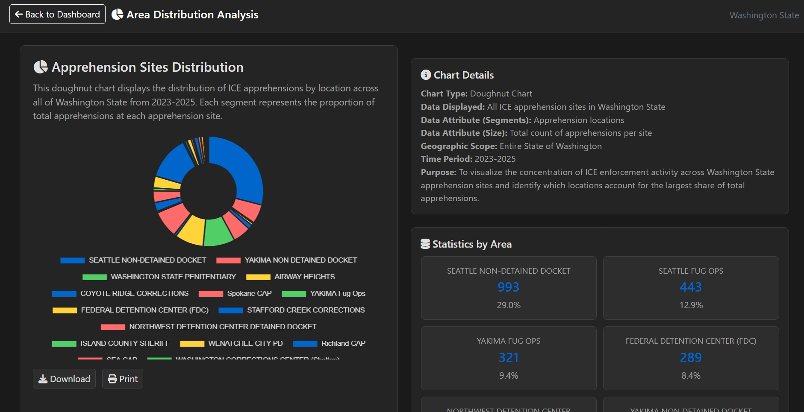

This project explores deportation patterns across Washington State through an interactive web-based geovisualization.
In response to the current political climate and the growing public debate regarding immigration enforcement,
our group created a tool to help users better understand deportation data in a visually clear and accessible manner.
We developed an interactive Mapbox GL JS-based map that allows users to explore deportation patterns at multiple zoom levels
across Washington State, with the ability to view detailed statistics for specific regions through interactive features.
Immigration enforcement remains a contentious policy issue in the United States. Understanding the spatial patterns
and distribution of deportations can help inform public discourse and raise awareness about this critical issue.
This project focuses specifically on Washington State to examine deportation patterns and trends in this region.
By visualizing this data geographically, we aim to provide insights into how immigration enforcement is distributed
across different counties and municipalities in Washington.
Data Sources:
- Immigration Customs Enforcement (ICE) data
- Data processed and aggregated by the Deportation Data Project
- Geospatial data for Washington State administrative boundaries
Tools & Technologies:
- Mapbox GL JS - Interactive mapping and visualization
- Chart.js - Temporal trend analysis and visualization
- GeoJSON - Geospatial data format for mapping
- HTML/CSS/JavaScript - Web interface development
The project includes both a spatial visualization of deportation patterns across Washington State
and a timeline analysis showing temporal trends in deportation enforcement.
Interactive Deportation Data Map
The main interactive map displays ICE arrest data across the Seattle metropolitan area, including King, Pierce, and Snohomish counties.
Users can hover over regions to see detailed statistics, with visual indicators showing arrest density through color-coded circles.
Interactive Geographic Analysis showing arrest density and statistics across the Seattle metro area.

Area Distribution Analysis
This doughnut chart visualization displays the distribution of ICE apprehensions by location across all of Washington State from 2023-2025.
Each segment represents the proportion of total apprehensions at each apprehension site, helping identify which locations account for
the largest share of enforcement activity.
Apprehension Sites Distribution showing the concentration of ICE enforcement activity across Washington State detention locations.

The data used in this project is sourced from public datasets compiled by:
- Immigration Customs Enforcement (ICE)
- Customs and Border Protection (CBP)
- Justice Department Executive Office of Immigration Review (EOIR)
External Resources:
This project was created by students at the University of Washington as a final project for GEOG 458.
Libraries and tools used:
- Mapbox GL JS - Interactive mapping library
- Chart.js - JavaScript charting library
- Leaflet - Mapping framework
- D3.js - Data visualization
The project is hosted on GitHub under an MIT license.